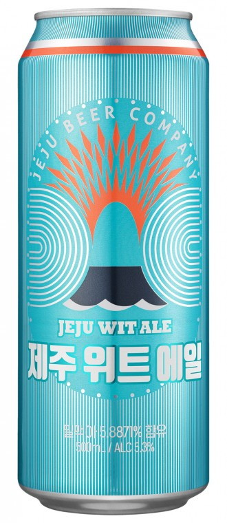
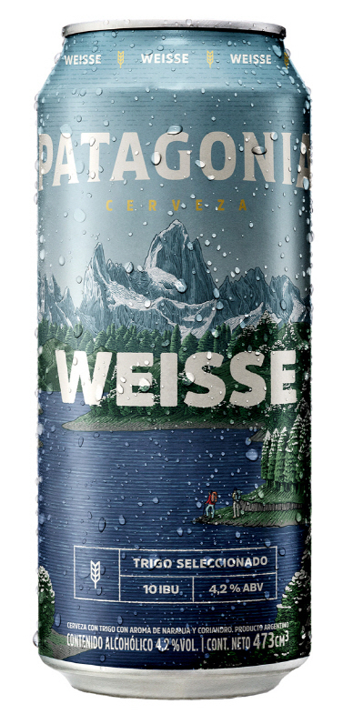
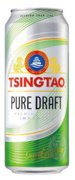
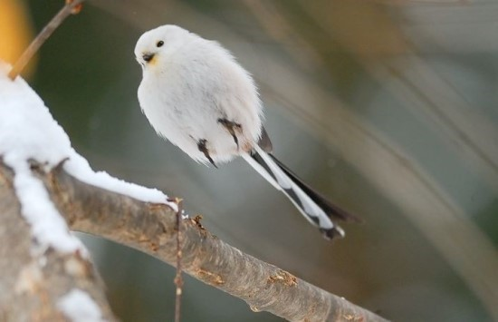

왜냐면 나는 노는게 제일 좋아. 친구들 모여라! 쥐뽈도 없으면서 경제적 자유를 이루어 평생 놀고먹는 백수가 되겠다 뭐 이런 거창한 꿈은 아니다. 그냥 그만큼 노는게 좋다는 것 뿐. 걱정이 많고 사는데 치이면 노는것도 싫어지는 때가 오는데 권태에 빠지지 않고 친구들 모여라 부지런히 놀 수 있는 사람이 되고 싶다는 것이다.
나는 맥주를 좋아한다.

요즘의 최애 맥주는 칭따오 퓨어드래프트, 전최애와 전전최애는 파타고니아 맥주와 제주맥주. 지금은 파타고니아를 마시는 중이다.
위스키는 더 좋아한다.
부커스 라는 위스키인데 이것은 내 최애 버번을 넘어서 위스키를 넘어서 술을 넘어서 내 최애 액체류이다. 초코에몽 < 아메리카노 < 부커스 < 아메리카노를 안주로 마시는 부커스 정도.
Chyse는 치즈 라고 읽어야한다.
말하자면 긴데 KUSIKOHC 라는 브랜드? 음 이것저것 하는 활동명? 아무튼 쿠시코크라는 것이 있는데 (일단 브랜드인걸로) KUSIKOHC 는 꽤나 유명한 패션 포토그래퍼 '조기석' 이라는 사람이 런칭한 브랜드이다. CHOKISUK 을 뒤집으면 KUSIKOHC 이다. 그래서 꿈이 꽤나 크던 학창시절 함께 꿈을 키워가던 동기이자 동생인 키위새끼와 같이 -아 왜 힙한애들은 이름만 뒤집어도 힙할까- 라는 생각을 하며 둘이서 종이에다가 영어로 이름 적어놓고 뒤집어도 보고 지워도 보고 접어도 보고 해서 쥐어짜내 꼴랑 를 만들었다. 아무도 치즈라고 읽지는 않지만 힘들게 만들었기 때문에 정신승리로 사용하고 있다. 나중에 태그로 만들거야
[셀털의 마지막] 나는 뱁새다. 어쩌면 뽀로로가 펭귄이 아니라 뱁새였을지도
황새 따라가다 가랭이 찢어지는 그 뱁새 맞음

구글보다 네이버가 편해서 태생이 힙한 사람은 못되는데 또 나보다 잘난 사람은 기가막히게 알아본다. 그리고 쫓아가다 가랭이 찢어지는거 좋아함 세상이 나빼고 재밌게 돌아가는거 못참는 타입이라 늘 가랭이가 아프지만 뱁새질이 나의 취미이다. 뽀로로가 꿈이라고 외치지만 나이브한 사람은 아니라는 뜻이다. 이제 나와 친구가 되자.